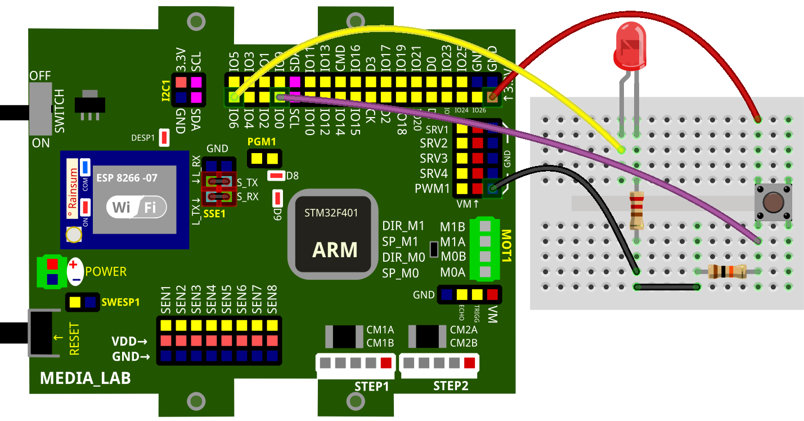
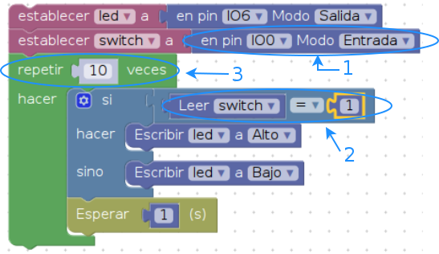

2. ENTRADAS DIGITALES¶
En éste ejemplo un switch (como entrada digital) controlará el estado de un led. Cuando el switch es oprimido el led es encendido, en caso contrario el led permanece apagado. Éste algoritmo será ejecutado únicamente diez veces, para luego terminar con el programa.
Nota: Se recomienda hacer ésta prueba con un bloque de secuencia finita, ya que con uno infinito, µpython no podrá ejecutar otra tarea hasta no recibir un reset.
2.1. Conexión física¶

2.2. Programa en blockly¶

2.2.1. Explicación de programa¶
En la imagen se numeran los bloques relevantes, los demás fueron explicados en la sección SALIDAS DIGITALES; el bloque si... hacer... sino (en azul) será explicado de forma detallada en otra sección.
- Este bloque denominado modo del pin permite construir el objeto switch en el pin IO0 (ver también imagen conexión física) con características de entrada. Por tratarse de un pin digital solo tendrá dos posibles estados de lectura, 1 o 0.
- Este par de bloques permiten leer, retornar el estado del pin (switch) y comparar su estado. El valor retornado será 1 si se detecta presencia de tensión con un umbral de nivel positivo, de lo contrario, el valor será 0. Con la ayuda del bloque si... hacer... sino, se determina el estado que tendrá el led. El estado que tenga el led durará el valor asignado en el bloque de espera.
- El bloque repetir, asigna un límite finito de repeticiones del algoritmo antes de terminar con el programa.